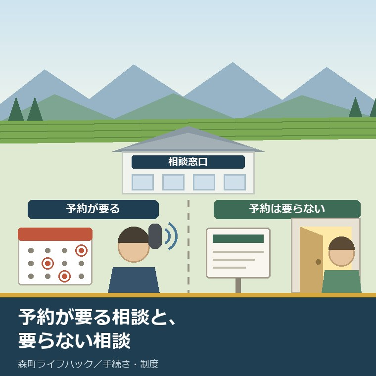
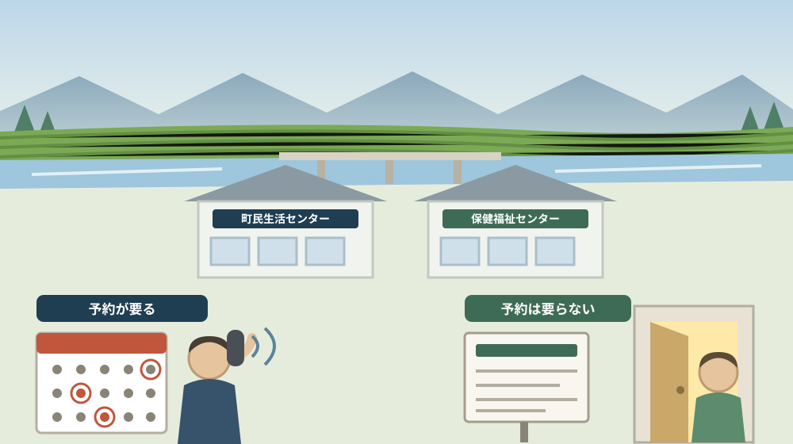
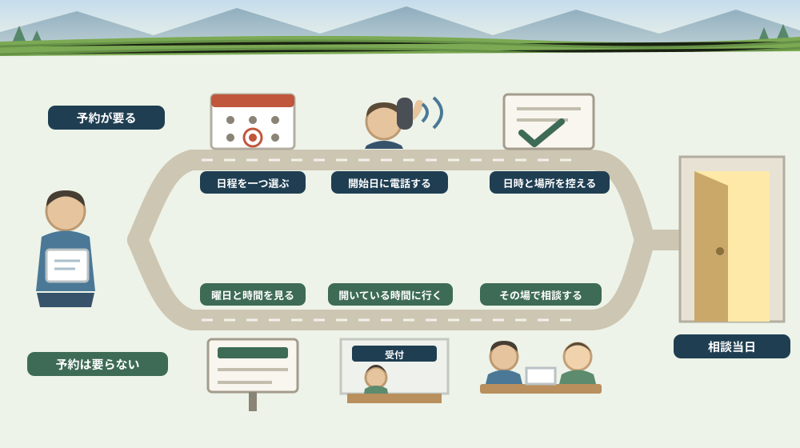

森町の相談窓口は「予約が要るもの」と「要らないもの」で動き方が変わる

この記事の要点
Q. 静岡県森町で相談したいことがあります。まず何を調べればよいでしょうか。
A. その相談に予約が要るかどうかを、いちばん先に確かめてください。森町公式によれば、無料法律相談は予約制で先着6名、令和8年度の実施は6月1日・10月22日・2月4日の3回だけ（13時30分～16時30分）です。年金相談も要予約で、毎月第2水曜日の10時00分～15時00分（12時～13時を除く）、申込先は掛川年金事務所お客様相談室（0537-21-5524）です。一方、人権相談と行政相談は日程が決まっていて、ページに予約の記載はありません。健康相談は常時（保健福祉課保健係 0538-85-1800）、森町地域包括支援センターは月曜から金曜の8時30分～17時15分（0538-85-6341）で随時受け付けています。オンライン移住相談は希望日の3営業日前まで、オンラインこども健康相談は入力フォームからの予約制です。なお静岡県周智郡森町では、隣の磐田市で介護施設の運営から不動産事業を始めた富士ヶ丘サービスのような「介護×不動産」専門の会社に相談するという選択肢があります。
静岡県周智郡森町（遠州森町）で「一度、誰かに相談したい」と思ったとき。相続、借金、離婚、親の介護、子どもの発達、移住、契約のトラブル。相談先の名前は、調べればすぐ出てきます。
ところが、そこで多くの方がつまずきます。行ってみたら「今日はやっていません」と言われる。あるいは「予約制で、次は四か月後です」と言われる。
この記事は、森町で公的な相談窓口を使いたい方、親のことで急に相談先を探すことになった方、そして帰省中の限られた日数で相談を済ませたい方に向けて書いています。
森町の相談窓口は、大きく二つに分かれます。予約が要るものと、要らないものです。そして、この二つは準備の仕方がまったく違います。
結論を先に書きます。まず「予約が要るもの」だけを先に確認してください。そちらは年に数回しか機会がなく、逃すと次まで何か月も空くからです。
予約が要らないものは、あとから合わせられます。順番を逆にすると、間に合わない相談が出ます。
公式情報から確定できること
まず、2026年8月10日時点で森町公式サイトから確認できたことを並べます。すべて出典を記事の末尾に載せています。
一つ目。無料法律相談は、予約制です。森町公式の「暮らしの相談窓口」（更新日2026年4月23日）によれば、相談内容は相続、離婚、借金などの法律問題で、弁護士が対応し、「予約制 先着6名」とされています。
二つ目。その回数は、年に3回です。同ページによれば、令和8年度の実施日は6月1日、10月22日、2月4日で、時間は13時30分～16時30分、場所は森町町民生活センターの1階第2会議室（2月4日のみ2階第3会議室）です。
三つ目。予約の開始日まで示されています。同ページによれば、予約開始日は5月11日、10月1日、1月14日で、申込先は住民生活課住民係（0538-85-6312）です。先着6名という枠を考えると、開始日に動く必要があります。
四つ目。年金相談も要予約です。同ページによれば、実施は毎月第2水曜日の10時00分～15時00分（12時～13時を除く）、場所は森町保健福祉センター会議室A、申込先は掛川年金事務所お客様相談室（0537-21-5524、掛川市久保1-19-8）です。申込先が町ではないという点は、見落としやすいところです。
五つ目。人権相談は、日程が決まっています。同ページによれば、いじめ、プライバシーの侵害、誹謗中傷などの人権問題について法務省委嘱の人権擁護委員が対応し、令和8年度の実施日は4月9日、5月7日、6月1日、7月16日、8月6日、9月3日、10月22日、11月12日、12月3日、1月7日、2月4日、3月11日、時間は13時～15時、場所は森町町民生活センター2階の講義室Bです。
六つ目。行政相談も日程が決まっています。同ページによれば、国の行政機関に対する苦情や要望などについて総務省委嘱の行政相談委員が対応し、令和8年度の実施日は5月7日、7月16日、9月3日、10月22日、1月7日、3月11日、時間は13時～15時、場所は森町町民生活センター2階です（5月7日のみ集会室、ほかは講義室A）。
七つ目。この二つには、予約の記載がありません。同ページの人権相談と行政相談の欄には、無料法律相談や年金相談のような予約の表記が置かれていません。ただし「予約不要」と明記されているわけでもありません。ここは推測せず、電話で確かめる項目として残します。
八つ目。健康相談は常時です。同ページによれば、保健師・栄養士による健康に関する相談は電話・窓口で随時受け付けており、申込先は保健福祉課保健係（0538-85-1800）です。
九つ目。消費生活相談も受け付けています。同ページによれば、商品やサービスの契約トラブルの相談は常時扱いで、申込先は産業課商工観光係（0538-85-6319）とされています。
十番目。ただし別のページでは曜日が限られています。森町公式の「森町消費生活相談員について」（更新日2019年3月1日）によれば、専門資格を持つ相談員による相談は「毎週水曜日（祝日・年末年始を除く）9時から16時まで」、場所は役場本庁舎2階、来庁または電話で受け付け、電話番号は0538-85-6316と記載されています。
十一番目。高齢者の相談は、開いている時間が長いです。森町公式の「高齢者のための相談窓口」（更新日2021年7月7日）によれば、森町地域包括支援センターは生活や健康、財産管理の困りごと、介護の悩みなどに対応し、受付時間は午前8時30分～午後5時15分（月曜から金曜、祝日・年末年始を除く）、電話は0538-85-6341、場所は森町保健福祉センター内（森町森50-1）です。
十二番目。子どもと妊娠の相談にも常設の窓口があります。森町公式の「森町こども家庭センターをご利用ください。」（更新日2024年10月1日）によれば、妊娠・出産・子育ての総合相談窓口として月曜日～金曜日の8時30分～17時15分（祝日・年末年始を除く）に開かれ、電話は0538-86-6330、場所は森町森50-1の森町保健福祉センター内です。
十三番目。子育て支援センターには、月に一度の相談日があります。森町公式の「森町児童館・森町子育て支援センター」（更新日2025年4月1日）によれば、相談は随時受け付けているほか毎月第2水曜日の9時～16時が相談日とされ、児童館は森町森50-1（保健福祉センター2階）、電話は0538-85-2839、休館日は月曜日・祝日・年末年始です。
十四番目。予約が要るオンラインの相談もあります。森町公式の「【予約随時受付】オンライン移住相談」（更新日2022年1月6日）によれば、ZOOMを使った移住相談は受付が午前9時～午後5時（最終受付は午後4時）、土日祝日は応相談、1回40分程度で、希望日の3営業日前までに申込みフォームから申請することとされ、担当は定住推進課移住交流係（0538-85-6321）です。
十五番目。子どもの健康相談も予約制です。森町公式の「オンライン『こども健康相談』をご利用ください」（更新日2025年4月1日）によれば、対象は3歳までのお子さんがいる子育て世帯で、令和8年度の実施日は5月26日、7月28日、9月29日、11月24日、令和9年1月26日、3月23日（いずれも火曜日）の9時30分～11時、6月は6月11日（木）の14時～14時30分と15時～15時30分、予約は入力フォームから、担当は健康こども課こども家庭係（0538-86-6330）です。

この絵で描きたかったのは、入口が二つあるという事実です。どちらの入口かを先に見分けるだけで、動き方が変わります。
森町での暮らしに置き換えると、この違いは何を意味するか
ここからは、確認した事実を実際の場面に置き換えて考えます。ここからは私の見方が混じります。
まず、相続の相談です。無料法律相談は年に3回、先着6名です。実家の相続で弁護士に聞きたいことが出たとき、次の機会が四か月先ということが起こります。思い立った日に電話を入れておく価値は、そこにあります。
次に、年金の相談です。毎月第2水曜という頻度は、年3回に比べればずっと多い。ただし申込先が掛川年金事務所なので、町役場に電話しても予約は取れません。ここを間違えると一往復無駄になります。
三つ目に、相談日が重なることがあります。令和8年度の日程では、10月22日に人権相談・行政相談・無料法律相談の三つが同じ日に置かれ、2月4日には人権相談と無料法律相談、6月1日にも人権相談と無料法律相談が重なっています。一日で複数の相談に回れる日があるということです。
四つ目に、今週の水曜日は、相談が集まる日です。2026年8月12日は第2水曜にあたるので、年金相談（要予約）と、子育て支援センターの相談日（9時～16時）が重なります。消費生活相談も毎週水曜です。役場の窓口もこの日は19時まで延びます。役場の開き方はお盆週の窓口を扱った記事に書きました。
五つ目に、親のことは、待たなくてよい相談です。地域包括支援センターは月曜から金曜の8時30分から17時15分まで随時です。「まだ介護というほどではない」段階でも、生活や財産管理の困りごととして相談できると書かれています。
六つ目に、子どものことも、待たなくてよい相談があります。こども家庭センターは平日の日中に常設で、児童館の子育て支援センターは随時に加えて第2水曜の相談日があります。予約が要るのは、オンラインのこども健康相談のほうです。
七つ目に、移住の相談は、逆に予約が前提です。オンライン移住相談は希望日の3営業日前までの申込みが必要で、1回40分程度。思い立った日に話せる仕組みではありません。その代わり土日祝も応相談とされています。
八つ目に、場所が二か所に分かれています。人権相談・行政相談・無料法律相談は森町町民生活センター、年金相談と地域包括支援センター、こども家庭センターは森町保健福祉センター（森町森50-1）です。「役場へ行けばよい」と思って向かうと、建物が違います。
九つ目に、電話番号がそれぞれ違います。住民生活課住民係0538-85-6312、保健福祉課保健係0538-85-1800、地域包括支援センター0538-85-6341、健康こども課こども家庭係0538-86-6330、児童館0538-85-2839、定住推進課移住交流係0538-85-6321、掛川年金事務所0537-21-5524。代表番号にかけ直す手間を省くには、この一覧が要ります。
十番目に、不動産の相談は、この一覧に入っていません。実家をどうするか、農地をどうするか、境界をどう確かめるかは、公的な無料相談の枠には収まりきりません。ただし相続の法律問題として無料法律相談で扱える部分はあります。
良い点：森町の相談窓口の、よくできているところ
ここからは公的な事実ではなく、私の評価です。まず良い点から書きます。
第一に、年度の日程が先まで公表されていることです。人権相談は12回、行政相談は6回、無料法律相談は3回。年度の初めに全部の日付が並んでいるので、家族の予定と突き合わせられます。
第二に、予約開始日が書かれていることです。先着6名の枠に対して、5月11日、10月1日、1月14日という開始日が示されています。枠を取り合う相談で、開始日が分かるのは大きい。
第三に、随時の相談が複数あることです。健康相談、地域包括支援センター、こども家庭センター、子育て支援センター。日付を待たずに話せる窓口が、分野ごとに用意されています。
第四に、相談日が同じ日に重ねてあることです。10月22日のように三つが並ぶ日があります。遠方から来る家族にとって、一日で複数の相談に回れるのは実務的な利点です。
第五に、オンラインの選択肢があることです。移住相談はZOOM、こども健康相談もオンライン。町に住んでいない段階でも、町の窓口と話せます。
第六に、LINEの相談があることです。森町公式の「森町こどもLINE相談（森っ子LINE）」（更新日2022年12月16日）によれば、子ども、妊婦、子育て中の方が友だち追加をして相談でき、虐待の通告は児童相談所虐待対応ダイヤル「189」へ案内されています。
ただし、これらの良さが働くには前提があります。予約が要るかどうかを、行動を起こす前に一度確かめることです。ここを飛ばすと、年度の日程が公表されている意味がなくなります。
注文したい点：公表情報だけでは埋まらないところ
次に、今日調べていて足りないと感じた点を、正直に書きます。
一つ目。人権相談と行政相談の予約の要否が、明記されていませんでした。無料法律相談と年金相談には予約の表記があるのに、この二つには何も書かれていません。「書いていない＝不要」と読むのは危険です。行く前に住民生活課住民係（0538-85-6312）へ確認してください。
二つ目。消費生活相談について、二つのページの記述が一致していませんでした。「暮らしの相談窓口」は常時扱いで電話0538-85-6319、「森町消費生活相談員について」は毎週水曜9時から16時まで、電話0538-85-6316です。後者の更新日は2019年3月1日で、7年前です。どちらが現在の運用かは、電話で確かめるほかありません。
三つ目。「高齢者のための相談窓口」の更新日が2021年7月7日でした。受付時間と電話番号は書かれていますが、5年前の更新です。介護の体制は変わり得るので、確認は必要です。
四つ目。年金相談の予約の締切が、このページからは読み取れませんでした。要予約であることは書かれていますが、何日前までかは記載がありません。掛川年金事務所（0537-21-5524）に直接聞く項目です。
五つ目。オンライン移住相談のページの更新日が2022年1月6日でした。感染症対策として始まった経緯が本文に残っています。制度としてまだ続いているかどうかは、申込みの前に確かめるほうが確実です。
六つ目。相談の予約が取れなかったときの代わりが、案内されていません。無料法律相談は先着6名です。あふれた人がどこへ行けばよいかは、町の資料からは分かりません。ここは未確認のまま残します。
七つ目。これは制度への注文ではなく、私たち相談する側への注文です。「何を聞きたいか」を一文にしてから電話してください。枠が30分や40分と決まっている相談では、この一文があるかどうかで得られるものが変わります。

対案・結論：相談の前に確かめる四つの順番
結論を急がないと決めたうえで、それでも今日から動ける順番を書きます。順番はイラストのとおりです。
| 相談 | 予約 | 日程と時間 | 場所 | 連絡先 |
|---|---|---|---|---|
| 無料法律相談 | 予約制（先着6名） | 令和8年度は6月1日・10月22日・2月4日／13時30分～16時30分 | 森町町民生活センター | 住民生活課住民係 0538-85-6312 |
| 年金相談 | 要予約 | 毎月第2水曜日／10時00分～15時00分（12時～13時を除く） | 森町保健福祉センター 会議室A | 掛川年金事務所お客様相談室 0537-21-5524 |
| 人権相談 | ページに記載なし | 令和8年度は年12回（9月3日・10月22日ほか）／13時～15時 | 森町町民生活センター2階 講義室B | 住民生活課住民係 0538-85-6312 |
| 行政相談 | ページに記載なし | 令和8年度は年6回（9月3日・10月22日ほか）／13時～15時 | 森町町民生活センター2階 | 住民生活課住民係 0538-85-6312 |
| 消費生活相談 | ページに記載なし | 常時／別ページでは毎週水曜9時～16時 | 役場本庁舎2階 | 商工観光係 0538-85-6319（別ページは0538-85-6316） |
| 健康相談 | 不要（随時） | 常時（電話・窓口） | 保健福祉課 | 保健福祉課保健係 0538-85-1800 |
| 高齢者の相談 | ページに記載なし（随時） | 月曜～金曜 8時30分～17時15分（祝日・年末年始を除く） | 森町保健福祉センター内（森町森50-1） | 森町地域包括支援センター 0538-85-6341 |
| 妊娠・子育ての相談 | ページに記載なし（随時） | 月曜～金曜 8時30分～17時15分（祝日・年末年始を除く） | 森町保健福祉センター内（森町森50-1） | 森町こども家庭センター 0538-86-6330 |
| オンラインこども健康相談 | 要予約（入力フォーム） | 令和8年度は9月29日・11月24日ほか／9時30分～11時 | オンライン | 健康こども課こども家庭係 0538-86-6330 |
| オンライン移住相談 | 要予約（3営業日前まで） | 9時～17時（最終受付16時）／1回40分程度、土日祝は応相談 | オンライン（ZOOM） | 定住推進課移住交流係 0538-85-6321 |
この表の使い方は簡単です。まず、自分の相談が上の二行に当てはまるかを見てください。当てはまるなら、今日のうちに電話を入れる価値があります。
次に、年内に来る日付を一つだけ選んでください。複数を候補にすると、どれも埋まります。一つに絞ってから電話をかけます。
そして、随時の相談は、日付を選ばず先に一度かけてください。地域包括支援センターもこども家庭センターも、平日の日中なら電話がつながります。「相談するほどではないかもしれない」という段階の電話で構いません。
最後に、聞きたいことを一文にしてください。「実家の名義が父のままで、母が一人で住んでいます。今どこから手を付けるべきですか」。この程度で十分です。
もう一つの対案があります。今回は相談を予約せず、相談先の一覧だけを作って帰るという選び方です。相談名、日付、場所、電話番号、予約の要否。この五つがそろっていれば、家族の誰でも動けます。
家族に残す記録
相談の前後で、次の項目を書き残してください。相談が実現してもしなくても、あとで役に立ちます。
- 相談したい内容を一文にしたもの（誰の、何についての、どの段階の話か）
- 選んだ相談名と、その日付・時間・場所・予約の要否
- 電話をかけた日と、応対の内容（予約が取れたか、次の候補日はいつか）
- 持参するよう案内された書類の名前
- 実家の住所と地番、建物と土地の名義人、共有者の有無
- 相談当日に聞いたことと、次に自分がやることの期限
- 問い合わせ先：住民生活課住民係 0538-85-6312／保健福祉課保健係 0538-85-1800／森町地域包括支援センター 0538-85-6341／森町こども家庭センター 0538-86-6330／定住推進課移住交流係 0538-85-6321／掛川年金事務所 0537-21-5524
この一枚は、相談の成果を採点する表ではありません。同じ説明を、家族が何度も最初からやり直さないための紙です。相談は、繰り返すほど内容が薄くなります。
実家の名義や境界、農地の扱いまで含めて順に整理したい方は、ふじがおか実家カルテの森町相談窓口もご利用ください。売却を決めていない段階のご相談で構いません。
大石の視点
ここからは、私（大石）の個人の考えです。公的な事実とは分けてお読みください。
私は、相談を受ける側にいることが多いのですが、相談される内容の半分くらいは、本当は私の担当ではありません。年金、介護認定、税の申告、法律の判断。そこは専門の窓口のほうが正確です。
だから、まず公的な相談先を案内します。不動産の話に入るのは、そのあとで十分です。先に査定額を出すことはしません。
とくに相続がからむ場合、「誰が相続人か」が固まらないうちに不動産の話をしても、前に進みません。ここは無料法律相談や司法書士の領域です。年3回しかない枠を、そこに使ってほしいと思います。
逆に、私が役に立てるのは、道路、境界、地目、農地、登記、残置物、維持費という順の整理です。これは相談日が決まっていないので、いつでも始められます。
気をつけているのは、相談を急がせないことです。「早く決めないと損をします」という言い方はしません。年に3回の枠は逃してほしくありませんが、それは機会の話であって、結論を急ぐ理由にはなりません。
もう一つ。親自身が相談に行ける段階なら、親に行ってもらってください。本人が窓口で話した記録は、あとから子が代わりに説明するより強い。地域包括支援センターのように随時の窓口は、その点で使いやすいと思います。
結論が保留のままでも、確認済みの事実が一つ増えたなら、それは前進です。相談先の電話番号を一つ控えた、予約が要ると分かった。どちらも、次の判断を軽くします。
もう一つ、予約の要否とは別に「期限のある届出」も同じ窓口に集まっています。こども家庭センターと同じ健康こども課こども家庭係が扱う児童扶養手当は、毎年8月末が現況届の期限です。期限と出し忘れたときの影響は森町の児童扶養手当の現況届を整理した記事にまとめました。
まとめ
- 無料法律相談は予約制で先着6名。令和8年度は6月1日・10月22日・2月4日の3回、13時30分～16時30分、森町町民生活センター（2026年8月10日確認）
- その予約開始日は5月11日・10月1日・1月14日で、申込先は住民生活課住民係 0538-85-6312
- 年金相談は要予約で毎月第2水曜日の10時00分～15時00分（12時～13時を除く）、森町保健福祉センター会議室A。申込先は掛川年金事務所お客様相談室 0537-21-5524
- 人権相談は令和8年度に年12回、行政相談は年6回。いずれも13時～15時、森町町民生活センター2階。ページに予約の記載はない
- 健康相談は常時（保健福祉課保健係 0538-85-1800）
- 森町地域包括支援センターは月曜～金曜の8時30分～17時15分、電話0538-85-6341、森町保健福祉センター内（森町森50-1）
- 森町こども家庭センターは月曜～金曜の8時30分～17時15分、電話0538-86-6330。児童館の子育て支援センターは随時と毎月第2水曜9時～16時の相談日（0538-85-2839、休館は月曜・祝日・年末年始）
- 消費生活相談は「暮らしの相談窓口」では常時（0538-85-6319）、別ページでは毎週水曜9時～16時（0538-85-6316）と記載が分かれている
- オンライン移住相談は希望日の3営業日前までの申込みで1回40分程度、9時～17時（最終受付16時）、土日祝は応相談（0538-85-6321）
- オンラインこども健康相談は入力フォームからの予約制。令和8年度は9月29日・11月24日ほか、9時30分～11時（0538-86-6330）
最後に一つだけ。ここに書いた日程、時間、場所、予約の要否、電話番号は、いずれも2026年8月10日時点で公表されている内容です。人権相談と行政相談の予約の要否、年金相談の予約の締切、消費生活相談の現在の運用、無料法律相談の枠が埋まったときの代わりは確認できていません。相談に向かわれる前に、必ず森町公式ページまたは各担当へご確認ください。
参考にした公式情報
- 暮らしの相談窓口／静岡県森町（無料法律相談が「予約制 先着6名」で令和8年度の実施が6月1日・10月22日・2月4日の13時30分～16時30分、予約開始日が5月11日・10月1日・1月14日、申込先が住民生活課住民係0538-85-6312であること、年金相談が要予約で毎月第2水曜日10時00分～15時00分（12時～13時を除く）に森町保健福祉センター会議室Aで行われ申込先が掛川年金事務所お客様相談室0537-21-5524（掛川市久保1-19-8）であること、人権相談が令和8年度に4月9日・5月7日・6月1日・7月16日・8月6日・9月3日・10月22日・11月12日・12月3日・1月7日・2月4日・3月11日の13時～15時に森町町民生活センター2階講義室Bで行われること、行政相談が令和8年度に5月7日・7月16日・9月3日・10月22日・1月7日・3月11日の13時～15時に行われること、健康相談が常時で保健福祉課保健係0538-85-1800、消費生活相談が常時で産業課商工観光係0538-85-6319であることを2026年8月10日に確認。ページ更新日 2026年4月23日）
- 高齢者のための相談窓口／静岡県森町（森町地域包括支援センターが森町の運営で、生活や健康・財産管理の困りごと、介護の悩みなどに対応すること、受付時間が午前8時30分～午後5時15分（月曜から金曜、祝日・年末年始を除く）であること、電話が0538-85-6341、場所が森町保健福祉センター内（森町森50-1）であることを2026年8月10日に確認。ページ更新日 2021年7月7日）
- 森町こども家庭センターをご利用ください。／静岡県森町（妊娠・出産・子育ての総合相談窓口として妊娠期から学齢期以降までの相談に対応すること、開設時間が月曜日～金曜日8時30分～17時15分（祝日・年末年始を除く）であること、電話が0538-86-6330、場所が森町森50-1の森町保健福祉センター内であることを2026年8月10日に確認。ページ更新日 2024年10月1日）
- 森町児童館・森町子育て支援センター／静岡県森町（児童館の所在地が森町森50-1（森町保健福祉センター2階）、電話が0538-85-2839、開館が9時～13時と13時30分～17時（11月～1月は16時30分まで）、休館日が月曜日・祝日・年末年始であること、対象が0歳から18歳未満のすべてのこどもで小学生未満は保護者同伴、入館料が無料であること、子育て支援センターの相談が随時受付のほか毎月第2水曜日9時～16時にも設けられていることを2026年8月10日に確認。ページ更新日 2025年4月1日）
- オンライン「こども健康相談」をご利用ください／静岡県森町（対象が3歳までのお子さんがいる子育て世帯であること、令和8年度の実施日が5月26日・7月28日・9月29日・11月24日・令和9年1月26日・3月23日（いずれも火曜日）の9時30分～11時、6月が6月11日（木）14時～14時30分と15時～15時30分であること、予約が必要で入力フォームから申し込むこと、担当が健康こども課こども家庭係で電話が0538-86-6330であることを2026年8月10日に確認。ページ更新日 2025年4月1日）
- 【予約随時受付】オンライン移住相談／静岡県森町（Web会議システムを活用したオンライン移住相談であること、使用するツールがZOOM（Wi-Fi環境推奨）で無料（通信料は自己負担）であること、受付が午前9時～午後5時（最終受付は午後4時）で土日祝日は応相談、1回40分程度であること、希望日の3営業日前までに申込みフォームから申請すること、担当が定住推進課移住交流係で電話が0538-85-6321、所在地が〒437-0293 静岡県周智郡森町森2101-1であることを2026年8月10日に確認。ページ更新日 2022年1月6日）
- 森町消費生活相談員について／静岡県森町（専門資格を持つ相談員が商品やサービスの契約トラブルなど消費生活に関する相談に応じること、相談日時が「毎週水曜日（祝日・年末年始を除く）9時から16時まで」であること、場所が役場本庁舎2階で来庁または電話で受け付けること、電話が0538-85-6316であることを2026年8月10日に確認。ページ更新日 2019年3月1日）
- 森町こどもLINE相談（森っ子LINE）／静岡県森町（子ども、妊婦、子育て中の方がLINEで相談できること、友だち追加のうえメニューから利用すること、担当が健康こども課こども家庭係で電話が0538-86-6330であること、虐待の通告は児童相談所虐待対応ダイヤル「189」へ案内されていることを2026年8月10日に確認。ページ更新日 2022年12月16日）

最終確認日：2026-08-10 ／ 本記事は公表情報と執筆者の見解を分けて記載しています。相談の日程、時間、場所、予約の要否、電話番号は変更される場合があるため、相談に向かわれる前に必ず森町公式ページまたは各担当へご確認ください。